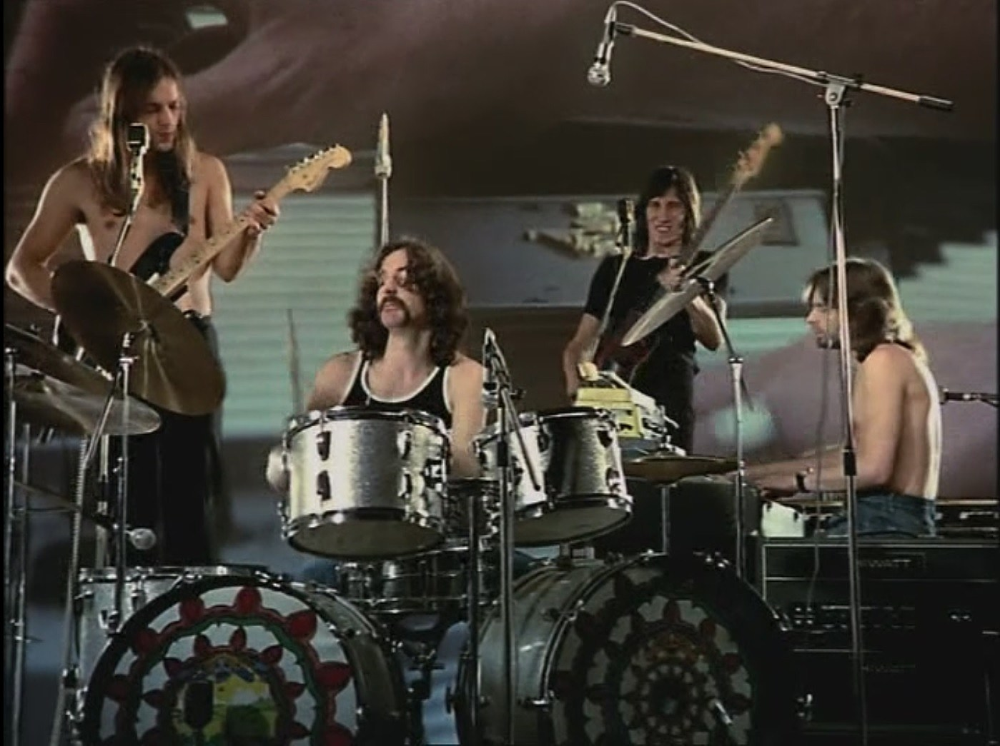

We don't need no education
우리는 교육 같은 건 필요 없어
We don't need no thought control
우리는 생각의 통제도 바라지 않아
No dark sarcasm in the classroom
교실 안에서 비꼬는 말도 듣고싶지 않아
Teacher, leave them kids alone
선생, 아이들을 좀 내버려 둬
Hey, teacher, leave them kids alone!
이봐, 선생, 아이들을 좀 내버려 둬!
All in all it's just another brick in the wall
이것도 결국 벽 속의 또다른 벽돌일 뿐
All in all you're just another brick in the wall
당신 또한 결국 벽 속의 또다른 벽돌일 뿐
We don't need no education
우리는 교육을 필요로 하지 않아요
We don't need no thought control
우리는 생각의 통제도 원하지 않아요
No dark sarcasm in the classroom
교실 안에서 비꼬는 말도 듣고 싶지 않아요
Teacher, leave us kids alone
선생님, 우리들을 좀 내버려 둬요
Hey, teacher, leave us kids alone!
이봐요, 선생님, 우리들을 좀 내버려 둬요!
All in all it's just another brick in the wall
이것도 결국 벽 속의 또다른 벽돌일 뿐
All in all you're just another brick in the wall
당신 또한 결국 벽 속의 또다른 벽돌일 뿐
"Wrong, do it again!"
"틀렸어, 다시 해!"
"If you don't eat yer meat, you can't have any pudding!"
"고기를 안 먹으면, 푸딩도 못 먹는다!"
"How can you have any pudding if you don't eat yer meat?"
"고기를 먹지 않고서 어떻게 푸딩을 먹을 수 있겠어?"
"You! yes, you behind the bikesheds! Stand still, laddy!"
"너! 그래, 자전거 창고 뒤에 너! 거기 그대로 서 있어, 이놈!"